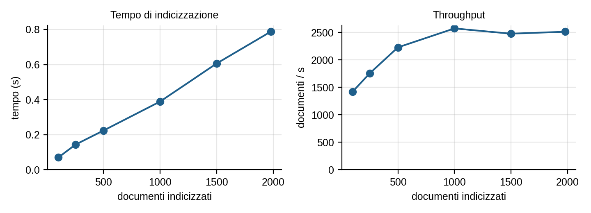
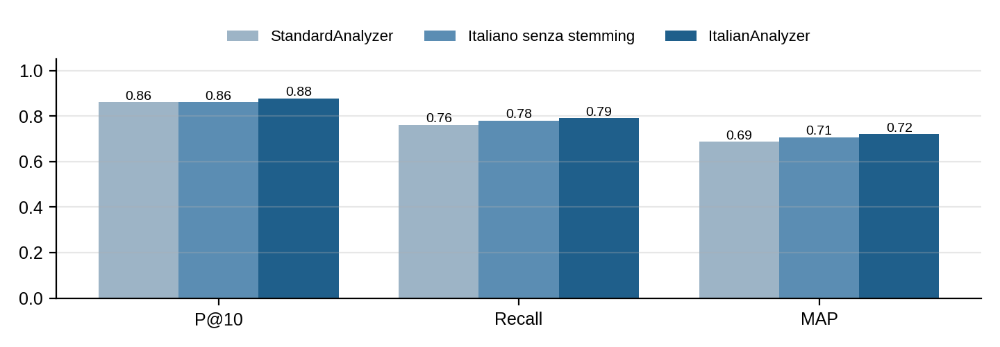

Repository: https://github.com/Alessio-Pecilli/IDD-HW3
Document per ogni file .txt (campi nome, contenuto, path) e lo aggiunge con un IndexWriter. Cartella dei documenti e dell'indice da riga di comando.nome … / contenuto …), le passa al QueryParser e stampa score, path e tempo di risposta dei primi 10 risultati.contenuto..txt e il manifest con la ground truth (§2.2).python3 scripts/build_dataset.py --max-voci 2300 # dataset-wiki/ + eval/manifest.tsv mvn compile exec:java -Dexec.mainClass=it.uniroma3.idd.Indexer -Dexec.args="dataset-wiki index" mvn exec:java -Dexec.mainClass=it.uniroma3.idd.Searcher -Dexec.args="index" mvn exec:java -Dexec.mainClass=it.uniroma3.idd.Benchmark # -> eval/benchmark.md mvn exec:java -Dexec.mainClass=it.uniroma3.idd.Valutazione # -> eval/risultati.md, eval/top10.tsv mvn test && python3 -m unittest discover -s scripts # test automatici
Si usano due collezioni con scopi diversi: una piccola, scritta a mano, per verificare il comportamento di ogni funzionalità con risultati prevedibili, e una grande, presa da Wikipedia, per misurare i tempi e valutare l'efficacia con le metriche.
dataset/, 12 file)I 12 file sono stati scritti a mano: 2–3 frasi ciascuno (circa 190 caratteri) su argomenti diversi (Roma antica, cucina, astronomia, motori di ricerca, Lucene…). Ogni file è stato costruito per mettere alla prova un aspetto preciso:
storia_di_roma (underscore), motori-di-ricerca (trattino), Ricetta Carbonara (spazio e maiuscola), per l'analyzer del campo nome;ElisionFilter;Con 12 documenti i risultati di ogni query si conoscono in anticipo, quindi questa collezione è usata dai test JUnit (§7). Per la stessa ragione però non basta a valutare tempi e recall.
dataset-wiki/, 1980 voci di Wikipedia)Per avere una collezione realistica e, allo stesso tempo, sapere quali documenti sono rilevanti per una query, il dataset è stato costruito dall'API di it.wikipedia.org con lo script scripts/build_dataset.py in tre passi:
list=categorymembers, namespace 0, senza sottocategorie). L'appartenenza alla categoria è decisa dagli autori di Wikipedia, non da me: è quindi una ground truth indipendente dal sistema da valutare.list=random), che fanno da "rumore": allargano la collezione e contengono documenti che condividono termini con le query senza essere pertinenti (es. un calciatore di Roma, un film intitolato Inferno).<titolo>.txt: il campo nome contiene quindi il titolo della voce, spesso con un disambiguatore tra parentesi, ad esempio Io (astronomia).Lo script scrive anche eval/manifest.tsv, che per ogni file riporta pageid, revid (la revisione esatta scaricata), lunghezza e codici delle categorie di appartenenza. Sia il manifest sia i 1980 file di testo sono nel repository.
Riproducibilità. Lo script scarica sempre la revisione corrente di ogni voce e un nuovo campione di voci casuali: non riscarica le revisioni elencate nel manifest. Rieseguirlo oggi produce quindi una collezione diversa (voci modificate, categorie cambiate, altre voci casuali) e metriche diverse da quelle riportate. Per questo la collezione esatta usata per le misure è salvata nel repository (dataset-wiki/) e il revid documenta da quale revisione proviene ogni file.
Dimensione finale. Le liste delle categorie e delle voci casuali contengono 4229 voci. Per limitare il numero di richieste all'API (che rispondeva spesso HTTP 429 Too Many Requests) sono state scaricate le prime 2300 in ordine di pageid. Tolte quelle sotto i 300 caratteri restano 1980 documenti: 923 tematici e 1057 casuali, per 12,1 milioni di caratteri di testo (12,2 MB in UTF-8). Lunghezza: minimo 300, mediana 2429, media 6126, massimo 160 481 caratteri. Per questo di alcune categorie è presente solo una parte delle voci (colonna "Nel dataset"). La ground truth è calcolata solo sui documenti presenti, quindi resta coerente.
| Codice | Categoria Wikipedia | Voci nella categoria | Nel dataset |
|---|---|---|---|
IMP | Imperatori romani | 103 | 102 |
GIO | Satelliti di Giove | 92 | 72 |
SAT | Satelliti di Saturno | 77 | 61 |
INF | Canti dell'Inferno | 34 | 34 |
PUR | Canti del Purgatorio | 33 | 33 |
PAR | Canti del Paradiso | 33 | 33 |
MOT | Motori di ricerca | 111 | 73 |
LIN | Linguaggi di programmazione | 144 | 105 |
ALG | Algoritmi di ordinamento | 30 | 27 |
DB | Basi di dati | 59 | 28 |
DOG | Dogi della Repubblica di Venezia | 129 | 127 |
PIT | Pittori italiani del Rinascimento | 239 | 133 |
PUN | Battaglie della seconda guerra punica | 55 | 27 |
ELE | Elementi chimici | 57 | 53 |
FOR | Formaggi italiani | 22 | 6 |
PAS | Tipi di pasta | 16 | 9 |
| Totale tematiche + 1057 casuali | 1234 | 923 + 1057 = 1980 |
La colonna "Voci nella categoria" somma 1234 perché due voci appartengono a due categorie (CiteSeer: DB e MOT; XBase: DB e LIN), quindi le voci tematiche distinte sono 1232. Il manifest ammette più codici per documento, ma nessuna delle due è tra le voci scaricate.
Gli analyzer sono definiti per campo con un PerFieldAnalyzerWrapper, restituito da Indexer.analyzer() e usato sia in indicizzazione sia dal QueryParser. In questo modo query e documenti producono termini compatibili.
CustomAnalyzerWhitespaceTokenizer → LowerCaseFilter → WordDelimiterGraphFilter
storia_di_roma → storia, di, roma; Io (astronomia) → io, astronomia: il filtro spezza su _ - . ( ) (i cambi maiuscolo/minuscolo non contano, perché il testo è già in minuscolo);"motori di ricerca";.txt finale viene tolta prima dell'indicizzazione.ItalianAnalyzerStandardTokenizer → elisione → minuscolo → stopword → stemming leggero
StandardAnalyzer e con lo stesso analyzer italiano senza stemming.Il tempo è misurato da Benchmark.java su sottoinsiemi casuali (seed fisso) della collezione Wikipedia. Comprende apertura della Directory, creazione dell'IndexWriter, lettura dei file, analisi, addDocument e commit(). Prima delle misure si fa un'esecuzione di riscaldamento della JVM su 500 documenti, che viene scartata; per ogni dimensione si riporta poi la mediana di 5 esecuzioni (codice compilato per Java 21, eseguito su Java 25, 8 core).
| Documenti | Testo (MB) | Tempo (ms) | Documenti/s | MB/s | Indice su disco (MB) |
|---|---|---|---|---|---|
| 12 (dataset piccolo) | 0,002 | ~450* | – | – | < 0,01 |
| 100 | 0,5 | 70 | 1423 | 7,6 | 0,2 |
| 250 | 1,3 | 143 | 1754 | 9,2 | 0,5 |
| 500 | 2,9 | 224 | 2228 | 12,9 | 1,1 |
| 1000 | 5,9 | 389 | 2573 | 15,2 | 2,0 |
| 1500 | 9,4 | 606 | 2477 | 15,6 | 3,0 |
| 1980 (tutto) | 12,2 | 788 | 2513 | 15,5 | 3,8 |
* Misura a parte, non prodotta da Benchmark.java: singola esecuzione di Indexer a JVM "fredda", dominata dall'avvio di Lucene e non dai documenti.

commit(), creazione dei segmenti), per questo il throughput è più basso. Con i soli 12 file del dataset piccolo si misurano solo questi costi fissi.Field.Store.NO): l'indice contiene solo dizionario e posting list, oltre a nome e path memorizzati.La prima parola indica il campo (nome o contenuto), il resto è passato al QueryParser: termini in OR, +termine obbligatorio, -termine escluso, AND/OR/NOT, "…" per le phrase query. Il ranking è BM25 (default di Lucene). Sul dataset piccolo i risultati sono noti in anticipo, quindi le query di prova sono verificate automaticamente da SearcherTest: 20 test con 25 query in tutto. La tabella ne riporta una selezione di 12, scelta per coprire tutte le funzionalità; le altre sono elencate sotto la tabella. Le 50 query usate per la valutazione con le metriche sono invece in §6.
| # | Query | Query Lucene | Risultati | Cosa verifica |
|---|---|---|---|---|
| 1 | nome roma | nome:roma | storia_di_roma | split su _ |
| 2 | nome carbonara | nome:carbonara | Ricetta Carbonara | maiuscole e spazio |
| 3 | nome "motori di ricerca" | nome:"motori di ricerca" | motori-di-ricerca | phrase query sul nome |
| 4 | nome "ricerca motori" | nome:"ricerca motori" | nessuno | nella frase l'ordine conta |
| 5 | nome pizze | nome:pizze | nessuno | sul nome niente stemming |
| 6 | contenuto pianeti | contenuto:pianet | sistema_solare | stemming (= pianeta) |
| 7 | contenuto "selva oscura" | contenuto:"selva oscur" | divina_commedia | phrase query |
| 8 | contenuto +guanciale +pecorino | +contenuto:guancial +contenuto:pecorin | Ricetta Carbonara | termini obbligatori |
| 9 | contenuto romano -pecorino | contenuto:roman -contenuto:pecorin | impero-romano, storia_di_roma | esclusione |
| 10 | contenuto impero romano | contenuto:imper contenuto:roman | impero-romano > storia_di_roma > Ricetta Carbonara | ranking BM25 |
| 11 | contenuto il di la | (vuota) | nessuno | solo stopword |
| 12 | titolo roma · contenuto "frase | – | errore | campo non valido · sintassi errata |
Le altre query di prova (split su -, query in maiuscolo, OR sul nome, elisione, AND esplicito, termine assente, query vuota…) sono in SearcherTest.
Query e giudizi di rilevanza. In eval/queries.tsv ci sono 50 query, ciascuna associata a uno o più argomenti (codici della tabella §2.2). Un documento è rilevante per la query se nel manifest appartiene a uno di quegli argomenti. Per ogni argomento ci sono più formulazioni: parole chiave sciolte, frase esatta, termini obbligatori/esclusi e query sul campo nome. In questo modo si vede anche l'effetto della formulazione. Le query sono state scritte prima di guardare i risultati e non sono state modificate per migliorarli.
Esecuzione. Ogni query è eseguita sull'intera collezione e si considera tutto il ranking, non solo i primi 10 risultati: altrimenti la recall non si potrebbe calcolare. La rilevanza è binaria.
Metriche (implementate in Metriche.java, verificate con esempi calcolati a mano in MetricheTest). R è l'insieme dei rilevanti, rel(i) vale 1 se il documento in posizione i è rilevante:
| Metrica | Definizione | Cosa misura |
|---|---|---|
| P@10 | |rilevanti tra i primi 10| / 10 | qualità della prima pagina, quella che l'utente guarda |
| Recall | |rilevanti restituiti| / |R| | copertura dell'intero insieme restituito (tutti i documenti che soddisfano la query) |
| AP / MAP | (1/|R|) Σi: rel(i)=1 P@i | qualità di tutto il ranking; i rilevanti non trovati contano 0. MAP = media su tutte le query |
Il programma calcola anche R@100, R-Precision, MRR e nDCG@10: i valori, per tutte le 50 query e le tre configurazioni, sono in eval/risultati.md sul repository GitHub.
Medie sulle 50 query. La riga evidenziata è la configurazione scelta. Le query sul campo nome sono identiche nelle tre configurazioni, perché cambia solo l'analyzer del contenuto.
| Analyzer contenuto | P@10 | Recall | MAP |
|---|---|---|---|
| StandardAnalyzer | 0,862 | 0,762 | 0,687 |
| Italiano senza stemming | 0,862 | 0,780 | 0,707 |
| ItalianAnalyzer (scelto) | 0,878 | 0,792 | 0,720 |

Dodici delle 50 query (ItalianAnalyzer), scelte per mostrare come la formulazione cambia il rapporto tra precision e recall; l'elenco completo è in eval/queries.tsv e le metriche per query in eval/risultati.md. Ril. è il numero di documenti rilevanti (|R|), Rest. il numero di documenti restituiti.
| Id | Query | Ril. | Rest. | P@10 | Recall | AP | Commento |
|---|---|---|---|---|---|---|---|
| q01 | contenuto imperatore romano | 102 | 390 | 1,000 | 0,990 | 0,923 | OR ampio: recall quasi totale, BM25 mette in cima i rilevanti |
| q18 | contenuto "imperatore romano" | 102 | 37 | 0,800 | 0,324 | 0,276 | la frase esatta taglia due terzi dei rilevanti |
| q22 | contenuto +imperatore +impero +augusto | 102 | 71 | 1,000 | 0,627 | 0,621 | termini obbligatori: precision piena, recall media |
| q12 | contenuto doge Venezia | 127 | 235 | 1,000 | 0,976 | 0,960 | OR su due termini caratterizzanti |
| q41 | contenuto "doge di Venezia" | 127 | 8 | 0,700 | 0,055 | 0,055 | le voci scrivono doge della Repubblica di Venezia |
| q21 | nome doge | 127 | 11 | 0,900 | 0,079 | 0,078 | solo i titoli con disambiguatore (doge) |
| q19 | nome inferno | 34 | 34 | 1,000 | 1,000 | 1,000 | titoli uniformi Inferno - Canto … |
| q05 | contenuto canto Inferno Dante | 34 | 178 | 0,600 | 1,000 | 0,647 | falsi positivi: canti di Purgatorio e Paradiso |
| q11 | contenuto database | 28 | 62 | 0,700 | 0,750 | 0,395 | penalizzata dalla ground truth incompleta (§6.4) |
| q40 | contenuto DBMS SQL tabelle query | 28 | 69 | 0,600 | 0,250 | 0,142 | molti linguaggi legati ai DB fuori categoria (§6.4) |
| q17 | contenuto pasta | 9 | 15 | 0,600 | 0,889 | 0,811 | ambiguità: formaggi a pasta filata |
| q48 | contenuto "formaggio a pasta" | 6 | 0 | 0,000 | 0,000 | 0,000 | nessun formaggio presente contiene la frase |
ItalianAnalyzer migliora tutte le metriche medie rispetto a StandardAnalyzer (MAP +0,033, Recall +0,030). Il guadagno è grande sulle query restrittive, dove una forma flessa diversa basta a escludere un documento: +imperatore +impero +augusto passa da AP 0,235 a 0,621 (imperatore/imperatori → imperator), canto Inferno Dante da 0,400 a 0,647 (canto/canti), la frase "imperatore romano" da 0,134 a 0,276. Sulle query OR molto ampie (indice ricerca informazioni documenti) lo stemming restituisce più documenti e perde invece qualche centesimo di AP. Le stopword e l'elisione da sole (riga intermedia) danno già circa il 60% del miglioramento della MAP."doge di Venezia" restituisce 8 voci, di cui solo 7 dogi su 127, perché quasi tutte le voci scrivono doge della Repubblica di Venezia. Il campo nome funziona bene solo quando il titolo segue una convenzione: con nome inferno (titoli Inferno - Canto …) tutte le metriche valgono 1, mentre nome doge trova solo gli 11 titoli con il disambiguatore (doge), di cui 10 dogi veneziani e uno genovese.canto Inferno Dante i falsi positivi sono canti del Purgatorio e del Paradiso, che citano Dante e l'Inferno: sono vicini al tema ma non rispondono al bisogno informativo. pasta restituisce formaggi (a pasta semicotta, pasta filata): l'ambiguità è nella lingua, non nell'analyzer. "formaggio a pasta" non trova nulla perché i 6 formaggi presenti non contengono quella frase.Per calcolare la recall bisogna conoscere tutti i documenti rilevanti. Con 1980 documenti e 50 query ci sarebbero 99 000 coppie da giudicare a mano, cosa impraticabile. Per questo si è usata l'appartenenza alle categorie di Wikipedia, che però è una ground truth incompleta: un documento pertinente che non sta nella categoria conta come errore. Per stimare l'effetto si è usata l'idea del pooling delle campagne TREC: si sono giudicati a mano i documenti tra i primi 10 di ogni query che il manifest considera non rilevanti (eval/giudizi_manuali.tsv).
nome doge, formaggi per pasta…).I test automatici sono 52, tutti superati (mvn test: 40 · python3 -m unittest discover -s scripts: 12). SearcherTest verifica le query di §5 sul dataset piccolo; IndexerTest i token prodotti dai due analyzer e la reindicizzazione senza duplicati; MetricheTest ogni metrica su ranking con valori calcolati a mano e sui casi limite (ranking vuoto, nessun rilevante); ValutazioneTest la lettura di manifest e query e una valutazione end-to-end su giudizi scritti a mano; test_build_dataset.py la conversione wikitext → testo (template annidati, tabelle, note, sezioni finali, redirect).
ItalianAnalyzer per il contenuto (MAP 0,720 contro 0,687) e mostrano il compromesso tra query OR (alta recall) e phrase query o query sul nome (alta precision, bassa recall).--max-voci).